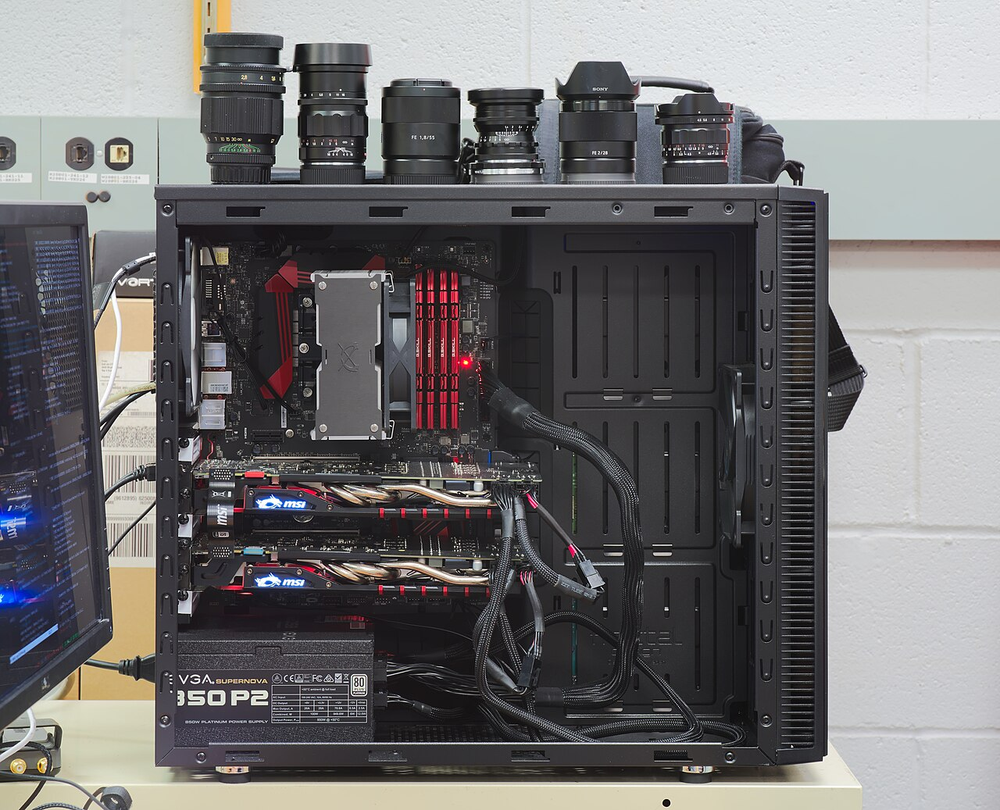

Disk & File Manager
When df.to_csv(...) returns, the OS may still hold buffered writes that have not reached durable storage. This lab builds a file manager that reads and writes fixed-size blocks and exposes an explicit sync option. Later layers add records, caching, and recovery on top of that interface.
struct docs ·
Further reading: the SQLite file format, for a production storage layout.
Terms with a dotted underline have definitions. Hover or tap a term to read its explanation.
Inspecting a record’s bytes
The widget shows a 64-byte page so each byte is visible. The default block size in your code is 4096 bytes. Use the presets to store the lecture’s example row (id=1, name="ada", gpa=39, representing a GPA of 3.9), then try your own values and read them back.
Ints are 4 bytes little-endian (tinted warm); strings are a 4-byte length prefix (tinted green) followed by UTF-8 bytes (warm). Gray bytes are untouched zeros.
Or clone the course repository:
git clone https://github.com/researcher111/AdvanceDatabase.git cd AdvanceDatabase/labs/lab-01/starter
Notice set_int(0, 1) writes 01 00 00 00, the
least significant byte first. That's little-endian, and it's in the spec your tests enforce.
Locating fixed-size blocks
The file manager reads and writes fixed-size blocks. In microdb, the default block size is 4 KB. Fixed sizes make blocks easy to locate: block k starts at byte k * block_size. They also allow the next lab’s buffer pool to hold blocks in equally sized memory frames. Reading a whole block can make nearby data available for later requests, although the transfer still has a cost.
With B = 4096: block 0 is bytes 0 to 4095 and block 1 is bytes 4096 to 8191, so to
read block 1 you seek(4096) and read 4096 bytes.
A file write usually reaches the operating system’s page cache before it reaches durable storage. fsync requests that the pending data be synchronized to storage. Part 3 measures the cost of that request. Lab 7 builds on this distinction to explain write-ahead logging.
Memory and persistent storage
A database keeps working copies of data in RAM and persistent copies on storage. To illustrate the latency difference, compare a 100 ns memory access with a 25 µs SSD access: the SSD access takes 250 times as long in this example. Actual times depend on the hardware and workload. The file manager reads stored blocks into memory pages and writes changed pages back to storage.
RAM and SSD storage
RAM provides fast access to data while a program runs. SSD storage retains data across restarts and usually offers more capacity, but access is slower. Database caching policies determine which stored blocks to keep in RAM.

▼ these four red sticks are the RAMPhotos: Dllu (CC BY-SA 4.0) and Victor Grigas, Wikimedia Foundation Servers (CC BY-SA 3.0).
{kind=link}
{kind=link}
The same memory-capacity problem appears in machine learning. Storing seven billion parameters at 16 bits per parameter requires about 14 GB for the weights alone; a running model needs additional memory. Four-bit weights take about 3.5 GB before other storage overheads. Keeping frequently used weights in fast memory can reduce data-transfer delays. Database buffer pools address a similar problem for frequently accessed pages.
Microdb uses these terms to distinguish stored data, its in-memory copy, and its identifier:
| Word | Lives | What it is |
|---|---|---|
| block | on disk | slice number k of a file: bytes k×4096 to k×4096+4095. Survives restarts. |
| page | in memory | one block-sized bytearray your code reads and edits. Gone when the process exits. |
BlockId | in your code | a name: a filename plus a block number. Holds no bytes; it just says which block you mean. |
fm.read copies a stored block into a memory page. fm.write writes the page’s bytes to the block named by a BlockId.
The left side shows stored file blocks; the right side shows the page in your process’s memory. FileManager transfers bytes between them. Green marks data just read, and orange marks data just written.
BlockId contains a filename and a block number. It identifies the stored block involved in a read or write without containing the block’s bytes. Lab 2 compares these identifiers when looking for a cached block. Because BlockId is hashable, it can also serve as a dictionary key in a more efficient lookup implementation.
Classes and byte-storage rules
The file manager has three classes: BlockId, Page, and FileManager. Read their responsibilities below, then use the byte-layout table while implementing the methods. The tests check that exact layout.
An integer always occupies four bytes in this lab. A string can occupy different numbers of UTF-8 bytes, so the page must record its length. The following table specifies how each type is stored.
Implement this byte layout exactly. test_filemanager.py checks that stored values read back correctly, and later labs rely on the same representation:
| Type | Layout at offset off | Bytes used | Tool |
|---|---|---|---|
int | 4 bytes, little-endian, signed | 4 | struct '<i' |
bytes | length as an int at off, payload at off+4 | 4 + len | set_int + slice |
string | UTF-8 encode, then store like bytes | 4 + len(utf-8) | encode / decode |
Encode first, then count. Characters are not bytes:
'héllo' h é l l o
as bytes 68 C3 A9 6C 6C 6F ← 'é' takes TWO bytes
len('héllo') = 5 characters
len('héllo'.encode('utf-8')) = 6 bytes ← reserve this many, or you truncatepack_into returns nothing; it writes into your buffer in place
struct.pack_into writes a value into an existing buffer at a specified offset and returns None. It changes only the bytes needed for that value. This lets several fields share a page without rewriting the whole page. Try the widget before implementing set_int.
A 16-byte page, all zeros. Choose an offset and a value, then pack. The warm bytes are the ones the call just wrote; everything else is untouched.
Write an integer at offset 4, then another at offset 6. The second write overlaps two bytes of the first value. The buffer does not track field boundaries, so your layout calculations must prevent unintended overlap.
Part 1 · Build ~35 min in class
After each function, use the function-level checks to test it before completing the rest of the lab.
Download the three starter files using the buttons below the page widget. Put them in microdb-lab1/ and implement the methods in the order below. Run the tests after each step to check the behavior you have added.
- Read
file_manager.pytop to bottom first (5 min). The module docstring describes the required behavior;BlockIdand the file-handle helpers are already written. Your work is the tenTODO-marked methods. Page.set_int / get_int: usestruct.pack_into("<i", …)andstruct.unpack_fromfor signed four-byte integers. Test each method with--unit Page.set_intor--unit Page.get_int.set_bytes / get_bytes: store the payload length atoffand its bytes starting atoff + 4. Read that length to determine the payload slice.set_string / get_string: encode and decode UTF-8 using the byte methods. All four PAGE tests should now pass.FileManager:length, thenappend, thenwrite, thenread, in that order, because each uses the previous. Seek arithmetic is the equation from above;readmust raiseValueErrorpast the end of the file.
"w+b" truncates an existing file (the mode letters are pulled
apart in the table below). The starter's _file() helper already
creates-without-truncating; use it, don't reopen files yourself.
struct.pack returns bytes while pack_into writes in place;
you want pack_into. And slicing a bytearray copies: write with
self._data[a:b] = payload, not chunk = self._data[a:b]; chunk[:] = payload.
Opening an existing file without truncating it
A Python file mode combines a base letter with optional modifiers. The base letter determines whether opening the file creates, preserves, or truncates its contents. + enables both reading and writing, and b selects binary mode.
| Piece | Short for | What it does to the file |
|---|---|---|
r | read | Open for reading only, positioned at byte 0. FileNotFoundError if it isn't there. This is the default when you omit the letter. |
w | write | Open for writing only, and truncate an existing file to zero bytes. Creates the file if it's missing. |
a | append | Open for writing only, keeping the contents. Creates if missing. Every write lands at the end of the file no matter where you seek. |
x | exclusive create | Create and open for writing, but raise FileExistsError rather than touch an existing file. |
+ | read and write | Enables both reading and writing. It does not change truncation behavior: w+ still truncates an existing file. |
b | binary | Read and write raw bytes: no text decoding, no newline translation. Without it you get str, and your page bytes get corrupted on the way through. |
The table below shows how common file modes behave. The starter uses "r+b" for existing data files so it can read and write without truncating them.
| Mode | Read | Write | If the file exists | If it doesn't | Fit for microdb |
|---|---|---|---|---|---|
"rb" | yes | no | opens at byte 0 | FileNotFoundError | no; append must write |
"w+b" | yes | yes | truncated to 0 bytes | created | no; truncates the existing file |
"wb" | no | yes | truncated to 0 bytes | created | only to create a missing file |
"r+b" | yes | yes | opens at byte 0, contents kept | FileNotFoundError | yes; what _file() uses |
"a+b" | yes | yes | kept, positioned at the end | created | no; writes ignore your seek |
"xb" | no | yes | FileExistsError | created | no; for lock files, not data |
_file() opens the file twice
The starter’s _file() helper creates the file if it is missing, then opens it with "r+b". This preserves existing contents and allows writes at specific offsets. Use the provided helper rather than reopening a data file with a mode that could truncate it.
The b is not optional either. Drop it and Python decodes your page as text and
rewrites line endings on the way through: the four bytes 0D 0A C3 A9 read back in
text mode as the two characters '\né': 0D 0A silently collapsed to one
newline, and two bytes fused into one é. A page of student records would come back
a different length than it went in.
seek before every read and write, every time
Every open file object carries one number. The docs call it the stream position;
everyone else calls it the cursor. It is the byte offset where the next read or
write will happen. It starts at 0 when _file() opens the file, and every
read(n) or write(b) moves it forward by the number of bytes moved. Two
methods let you move it and ask where it is:
f.seek(offset, whence=0) move the cursor. Returns the new absolute position.
f.tell() report the cursor's absolute byte position.The second argument to seek, called whence, says what
offset is measured from. Python accepts the integer or the named constant from the
os module; they are the same value.
whence | Name | Offset is measured from | In this lab |
|---|---|---|---|
0 | os.SEEK_SET (the default) | the start of the file | f.seek(blknum * block_size) jumps to a block |
1 | os.SEEK_CUR | the current cursor position | not needed; every call seeks from the start |
2 | os.SEEK_END | the end of the file | f.seek(0, 2) means "go to the very end" |
Each row is the same file. seek only changes the number; it
does not touch the disk. A block is moved when you read or write from
wherever the cursor is.
To implement length(), seek to the end with f.seek(0, 2) and read the byte count with f.tell(). Divide by block_size to get the number of blocks. Alternatively, os.fstat(f.fileno()).st_size returns the size without moving the file position.
Reads and writes change the file position. A length() implementation that seeks to the end changes it too. Therefore, begin each block read or write by seeking to blknum * block_size. Do not assume the file position was left at the correct block by the previous operation.
Part 2 · Verify ~20 min in class
Test one function at a time
Run these commands from the starter directory. --list lists the function names, --unit NAME checks one function, and --unit checks every function independently. The tests supply known data and working helpers for unfinished dependencies. The selected function always uses your code.
$ python3 test_filemanager.py --list
$ python3 test_filemanager.py --unit Page.get_int
$ python3 test_filemanager.py --unitUnit results are practice feedback. Run python3 test_filemanager.py without flags to check that your functions work together. The integration tests below determine your grade.
Run the full tests
The tests come in two groups. The PAGE tests never touch disk. Each one writes a value into a page and reads it back: ints (including negatives, which is why the spec says signed), strings with multibyte UTF-8 characters, and the adjacent-values test, which stores the full ada row and then checks that no field's write spilled into its neighbor.
The FILE tests check block allocation, file length, read/write round trips, and writes to adjacent blocks. Reading past the end must raise ValueError. The final test closes one FileManager and opens another to check that the stored data remains available. This is a close-and-reopen test, not a simulation of power loss.
$ python3 test_filemanager.py
PAGE group
[PASS] PAGE: int round-trip (incl. negative, INT_MAX)
[PASS] PAGE: bytes round-trip (length-prefixed)
...
FILE group
[PASS] FILE: data survives close + reopen
9/9 tests passedA classmate stores the 15-byte ada row. get_int(11) returns 39, but get_string(4) reads past the three bytes of the name. Which parts of the byte-storage contract should they inspect?
Show answer
Check the length prefix at offset 4, the payload start at offset 8, and the slice used by get_bytes. The stored length must be 3, and the read must return exactly those three payload bytes. The symptom alone does not identify one faulty method.
Part 3 · Measure ~20 min · finish as homework
The file manager’s write(…, sync=True) option ends with fsync. Compare its throughput with sync=False to measure the cost of requesting synchronization to storage.
Run it and note all three numbers; you will want them in class:
$ python3 measure_io.py
buffered writes (sync=False): 465,849 blocks/sec
durable writes (sync=True): 30,788 blocks/sec
ratio (buffered / durable): 15.1x15× faster buffered writes in this sample run; synchronization accounts for the difference
Change BLOCK_SIZE in measure_io.py from 4096 to 512 and run the script. Then repeat with 65536. Report both write rates and their ratio at each size. Explain whether your results suggest that transferring more bytes or requesting synchronization contributes more to the observed time.
The chart shows a sample run on the instructor’s Apple-silicon laptop. Your rates and ratio may differ with hardware, operating system, storage configuration, and other activity. Use the tests to check correctness and your measurements to explain performance.
sync=False allows a write to return while data may still be buffered by the operating system. sync=True requests synchronization to storage before returning. The macOS FAQ below explains an additional device-cache limitation.
Keep your measured ratio for Lab 7. It helps explain why databases carefully schedule durable writes and often synchronize a log at commit while writing data pages separately. The lab’s simple recovery design and production database designs use different write policies.
Where storage costs affect data workflows
The distinction between buffered writes and durable writes matters in data pipelines, checkpoints, and database loading:
| Where you meet it | How storage behavior matters |
|---|---|
| A training job writing a CSV | An interrupted write can leave a partial CSV. Validate the output before reusing it, or design the pipeline to detect and replace incomplete files. |
| A model checkpoint | Completing a save and making it durable are separate steps. A common checkpoint design writes a temporary file, synchronizes it, and replaces the old checkpoint. Crash-safe replacement also depends on filesystem and directory-synchronization rules. |
A bulk loader (Postgres COPY, or one transaction wrapped around many
INSERTs) | Synchronizing every record separately can add substantial overhead. A batch or transaction can group writes and reduce the number of synchronization requests. The exact behavior depends on the database and its durability settings. |
| Parquet row groups | Parquet stores metadata that identifies column chunks and row groups. A reader can use that metadata and statistics to skip data that cannot match a filter. Row groups need not have equal byte sizes, unlike microdb blocks. |
| DuckDB or Postgres reporting pages read | Page-read counts measure how much stored data a query accesses. In microdb, each requested block has a BlockId. |
Assignment
Submit file_manager.py on Gradescope (link on the
course home) by Thursday Sep 3 at class start.
Deliverables
- ☐
file_manager.py: all nine local tests pass (9/9).
Submit only the file listed above. Grading uses the lab’s correctness tests; measurements and reflections are for class discussion.
Discussion prompts (not graded)
Use the measurement and reflection questions to explain your results. They are not graded, but bring your measurements and answers to class for discussion.
- Your three numbers from
measure_io.py, plus 2–3 sentences: which number surprised you, and what does the ratio mean for a database that promises durability? - Reflection (3–5 sentences total): (1) Why does
read()take a page argument instead of returning a new Page? (2) Why must BlockId be immutable?
Provided code and required work
| File | Provided | You write |
|---|---|---|
file_manager.py | BlockId, file-handle helpers, docstring spec | 6 Page methods + 4 FileManager methods |
test_filemanager.py | complete, do not edit | |
measure_io.py | complete, do not edit | run it, record results |
Grading
| Component | Checked how | Weight |
|---|---|---|
| Correctness | Gradescope runs the graded test group described above. Each test contributes an equal share of the points. | 100% |
Aim to finish Build and Verify in class, where you can ask for help. Run Measure afterward and bring the results and your interpretation to the next class.
Going further optional
If you finish early, add get_float/set_float using struct '<d' and check a read/write round trip. Alternatively, inspect the page-size field of a SQLite database with hexdump -C. The SQLite format documentation in the references describes the big-endian field at bytes 16–17.
FAQ
My two runs of measure_io.py differ by 30%. Is something broken?
No, you're timing a real OS with other work to do. Run it three times, report the middle result, and remember the measurements are ungraded; bring the median and your interpretation to class.
I'm on macOS and my fsync ratio seems suspiciously small.
On macOS, fsync and F_FULLFSYNC provide different guarantees about flushing a drive’s own cache. The stronger request can take longer. This lab measures fsync; note your operating system when comparing results with classmates.
Windows: anything different?
Python provides os.fsync on Windows as well. Use a local working folder for the lab; background synchronization software can interfere with file access.
Why little-endian? Postgres stores big-endian on the wire!
Either byte order can work if every reader and writer uses the same one. This lab specifies little-endian integers, and the tests check that representation. Later record-management code depends on those bytes being stored consistently.
Can I keep my own design instead of the given API?
Keep the provided method names, arguments, and behavior because later labs call that interface. You can choose how to organize the implementation inside each method.